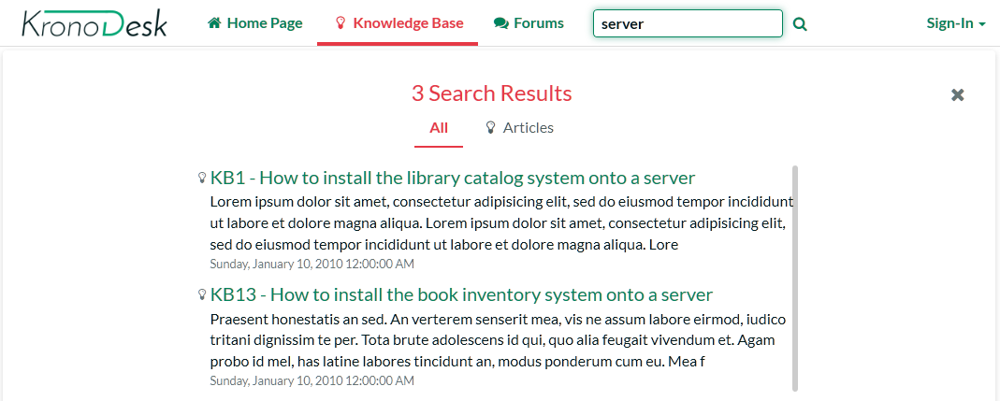
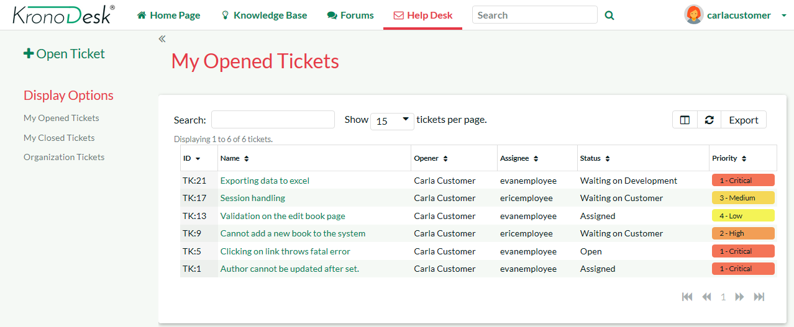
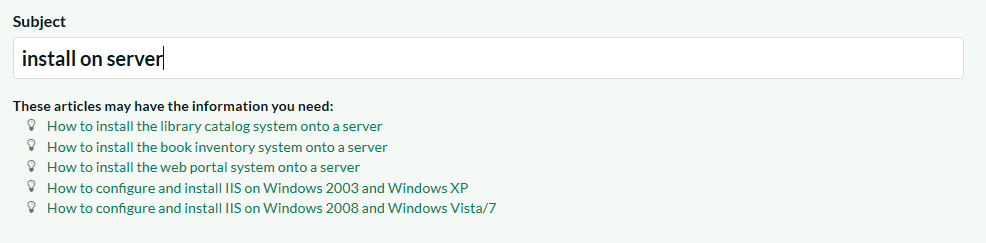
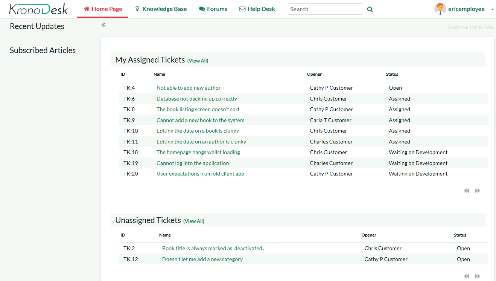

KronoDesk Quick Start Guide¶
Getting Started¶
Once you have either downloaded and installed a trial version of KronoDesk or signed up for a hosted trial, you should be able to see the following home page in your web browser:

This is the view of the system that a guest user would see of the system. As you can see it displays some general help information for them as well as a list of recent articles, forums posts, company news and popular articles.
Before logging in as an administrator and showing you how to add new articles, forum posts and help desk tickets, let's start by seeing what information a guest user can see.
Viewing Knowledge Base Articles¶
When a user has a problem and needs help, their first level of support would be to look for a pre-written knowledge base (KB) article that has been written by a support agent.
Users can find articles either by searching or by browsing the available topics. To search, enter a search term (for example, "error message") in the KB search box:

This will automatically display a drop-down list of matching articles:
The user can then click on an article to view it, or click on the 'browse' link to view articles organized by category:

Users can navigate to the category they are interested in, view articles for that category, or drill down into sub-categories. They can also click one of the top tags used in the articles, to view all related articles:

Another way to search the knowledge base is to enter your search into the global search box at the top of the screen and click the search button to the right. KronoDesk will display a list of articles (and other matching items) in the results window:

Clicking on one of the articles in the search results will bring up the full text of the article.
Browsing the Support Forums¶
If you were unable to solve your problem by finding a matching article, your next option is to look into the forums to see if another user has experienced the same problem.

Click on a specific forum (e.g. Library Catalog Issues & Questions):

KronoDesk will display the list of threads in the forum you selected. The list is sorted with the most recent threads at the top. Click on one of the threads (for example "How do I install the library catalog system onto my computer?") to display the full conversation:

KronoDesk displays the original message together with replies by different users. If a user wants to reply to the thread they will be prompted to login first (if they are not already logged in).
If you are interested in this topic, you can click on the breadcrumb links at the top of the page to find other threads in the same forum or category. In addition, you can click on one of the meta tags to display a list of other related threads (that may be in a different forum or category altogether):

Using the Help Desk Ticketing System¶
Once a user has looked at the public information, if they still cannot find an answer to their problem they typically submit a help desk ticket to the support team. This section shows you how to use the help desk in KronoDesk.
Submitting a New Ticket¶
First, login as a customer using the following credentials:
- Login: carlacustomer
- Password: PleaseChange
By default, her account role allows her to open support tickets, so you should now see the 'Help Desk' menu item in the top navigation bar. Clicking on it will reveal Carla's open tickets:

To submit a new help desk ticket, click on the 'Open Ticket' link in the left-hand sidebar. This will bring up the page where basic information can be added to a new ticket:

First, select the Product 'Library Catalog System' and, now when you enter the title for the ticket, a list of potentially helpful KB articles will be displayed:

If you see an article that may help you, you can click on it to open the article in a new tab or window to review. If none of the KB articles help, you can continue filling out the fields to submit a new support ticket. Make sure you fill in all the required fields (the name and description as well as those marked with an asterisk and shown in bold). You can upload files and select the Type here as well.
Go ahead and complete the support ticket and click "Submit". The system will let you know that the ticket was submitted successfully.
Once the ticket is submitted, switch roles so you can simulate being the customer service agent, responding to the ticket.
Responding to a Ticket¶
You can create a ticket as an internal user or as a customer. Let's see the experience from the employee's perspective. Click the 'Sign Out' link and login as an employee using the following credentials:
- Login: ericemployee
- Password: PleaseChange
Once you have logged in you will see the employee dashboard. If you don't see it right away, click on the 'Home Page' link.

This view lets you see all of the help desk tickets assigned to you, as well as any tickets that are not currently assigned to any support agent, as well as other items you may have subscribed to or written.
Click on the main 'Help Desk' link and KronoDesk will provide you with a filterable, sortable list of help desk tickets:

Make sure you have the list set to the 'Unassigned Tickets' view and then select the new help desk ticket that you just submitted by clicking the appropriate row. Now choose the option from the left sidebar menu 'Assign Ticket to Me'. Alternatively, you can right-click on the ticket (long press on mobile devices) and select 'Assign Ticket to Me'.) Once you have done that, switch the view to 'Assigned Tickets' and verify that the new ticket has been assigned:

Now click on the hyperlink for the new ticket and you will see the ticket details page:

This page lets you see all the details of the submitted ticket, including custom fields (shown in the sidebar on the left). KronoDesk is customizable to require different fields for each product and each stage the ticket goes through.
Click on the status dropdown highlighted at the top where it is says "Assigned". Assigned is the current status. Change the status to 'Waiting on Customer'. The options will vary depending on the current status of the ticket, as defined in the application's Workflow. Add comment that describes your proposed solution by clicking on any of the reply buttons:

Once you are finished updating the ticket, click "Submit" and the ticket will be returned to the customer (the status changes to 'Waiting on Customer') and an email will be sent, notifying them of the change and proposed solution.

Now that you have responded to the customer, you can log back in as a customer to see how the response would be received.
View Response as Customer¶
You need to click the 'Sign Out' link and login as the customer using the original credentials:
- Login: carlacustomer
- Password: PleaseChange
This will then return you to the customer Home Page and scroll to the section that displays a list of your open help desk tickets:

You will see the ticket you had submitted is now 'Waiting on Customer'. That means it is has either a clarifying question or a potential solution from the support agent.
Click on the ticket title to display the response from the agent:

You can see on this page the original question / problem and the most recent response, together with the complete contact history from the customer and all the support personnel who have worked on this ticket.
Let's pretend that the solution worked and we want to close the ticket. Click on the 'Change Status' dropdown, and select 'Close Ticket'. Enter a note back to the agent, and then click 'Submit'. The ticket will now be closed.

Congratulations! You have submitted a help desk ticket, responded to it as a support agent and then closed the ticket.
The last thing to demonstrate, is to see how a manager would log-in and view/triage all the open help desk tickets.
Searching for Tickets¶
You need to click the 'Sign Out' link and login as a manager using the following credentials:
- Login: marthamanager
- Password: PleaseChange
Once you have correctly logged in you will see the employee dashboard. Click on the main 'Help Desk' menu entry to display the manager-view.
As a manager-level user, you can view:
- All the open tickets
- All of the closed tickets
- All tickets (open and closed)
In any of these three views you can sort and filter the list of tickets by any of the columns displayed in the ticket list:

You can use the operations in the sidebar to bulk assign help desk tickets to specific users, delete bad or duplicate tickets or merge tickets together. Tickets can be selected by clicking on the row. To select a range of tickets, click on the first ticket, then shift-click on the last ticket. Control-Click to add or remove a ticket from the selection.
Configuring and Customizing¶
You have now tried out KronoDesk both as a user viewing the knowledge base and forums, as a customer submitting a help desk ticket, and as a manager. This section describes the steps needed to configure the system for real use by your organization.
To perform the configuration, you will need to login as the Administration using these credentials:
- Login: administrator
- Password: PleaseChange
Once you have successfully logged-in, click on the Administration menu item to bring up the Administration home page:

There are many different areas you can configure in the Administration section. For example, you can customize the different ticket types, statuses, and priorities, you can enter the various products, forums and article categories you will need.
You can also disable sections of KronoDesk that you won't be using (for example, some of our customers don't need a public forum). These are all described in more detail in the KronoDesk Administration Guide.
The next sections will illustrate a couple of important setup steps that you will need to perform before you start using KronoDesk for real.
Configure Branding¶
Under System Settings > Appearance, you will have two tabs. The first tab, 'Appearance', will let you select one of the pre-installed themes, or edit a theme to customize the applications appearance to match your company color scheme. The edit theme page will let you set various colors for different parts of the application:

The second tab, 'Branding', will let you set certain text and page names. In this section you should change the name of the site from 'KronoDesk' to your company name, enter in the email address, phone number and other information that you'd like to describe your support site.
This page lets you change the color scheme of KronoDesk, upload your company logo (full size image for desktop devices and a smaller icon for use on the mobile version) and generally change how it will look.
For example, we use KronoDesk ourselves and we have rebranded it as follows:

Remove Sample Data & Start Using¶
Finally, once you are ready to start using KronoDesk, you will want to delete all of the sample categories, products, forums, threads, articles, help desk tickets and users, and then create your own categories and settings.
To do that, go to 'System Settings > Remove Sample Data'. Click on the 'Remove Sample Data' button to confirm your decision:

Congratulations, you are now ready to use KronoDesk. You can now add users, products and forums.
For more information about any of the features, please refer to the:
Appendix A- Sample Users¶
Here are the users and roles we used during the demonstration:
- Administrator = administrator
- Customer = carlacustomer
- Employee = ericemployee
- Manager = marthamanager